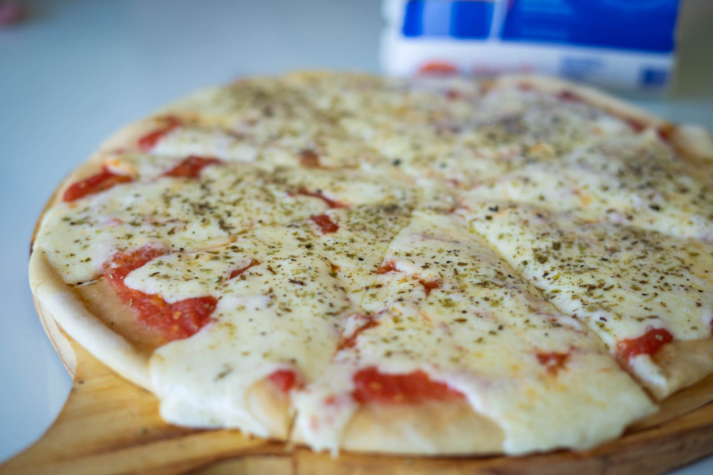

Potrero Digital
Receta de pizza casera con jamon y queso
Acá aprenderemos a hacer una pizza casera, para cuando no tengas ganas de hacer algo tan complicado pero querés comer rico o sos muy vago

Ingredientes
- 1kg de agua
- 600 ml de agua
- 50 g de levadura
- 20 g de sal
- 4 cucharadas de aceite
- 1 pisca de azucar
- salsa de tomate
- queso cremoso o mussarella
- jamon
Preparacion
- activamos la levadura
- hacemos la masa
- dejamos q cresca la masa
- estiramos la masa en una pizzera
- le ponemos salsa
- metemos la pizza en el horno
- dejamos q se cosine
- le ponemos queso y la metamos de vuelta al horno
- a disfrutar
🍕Pizza casera con harina PUREZA !! Receta ARGENTINA 🇦🇷 Ricas y en 5 minutos 😱 🍕
Paulina Cosina Receta de Pizza
Cómo hacer pizza casera: Receta fácil y deliciosa
Receta de pizza casera: masa esponjosa y sabor tradicional